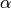

4.5. Covariance estimation¶
Many statistical problems require at some point the estimation of a population’s covariance matrix, which can be seen as an estimation of data set scatter plot shape. Most of the time, such an estimation has to be done on a sample whose properties (size, structure, homogeneity) has a large influence on the estimation’s quality. The sklearn.covariance package aims at providing tools affording an accurate estimation of a population’s covariance matrix under various settings.
The package does not include robust tools yet, so we assume that the data sets do not contain any outlying data. We also assume that the observations are independent and identically distributed (i.i.d.).
4.5.1. Empirical covariance¶
The covariance matrix of a data set is known to be well approximated with the classical Maximum Likelihood Estimator (or empirical covariance), provided the number of observations is large enough compared to the number of features (the variables describing the observations). More precisely, the Maximum Likelihood Estimator of a sample is an unbiased estimator of the corresponding population covariance matrix.
The empirical covariance matrix of a sample can be computed using the empirical_covariance function of the package, or by fitting an EmpiricalCovariance object to the data sample with the EmpiricalCovariance.fit method. Be careful that depending whether the data are centered or not, the result will be different, so one may want to use the assume_centered parameter accurately.
Examples:
- See Ledoit-Wolf vs Covariance simple estimation for an example on how to fit an EmpiricalCovariance object to data.
4.5.2. Shrunk Covariance¶
4.5.2.1. Basic shrinkage¶
Despite being an unbiased estimator of the covariance matrix, the Maximum Likelihood Estimator is not a good estimator of the eigenvalues of the covariance matrix, so the precision matrix obtained from its inversion is not accurate. Sometimes, it even occurs that the empirical covariance matrix cannot be inverted for numerical reasons. To avoid such an inversion problem, a transformation of the empirical covariance matrix has been introduced: the shrinkage. It consists in reducing the ratio between the smallest and the largest eigenvalue of the empirical covariance matrix. This can be done by simply shifting every eigenvalue according to a given offset, which is equivalent of finding the l2-penalized Maximum Likelihood Estimator of the covariance matrix, or by reducing the highest eigenvalue while increasing the smallest with the help of a convex transformation : . The latter approach has been implemented in scikit-learn.
A convex transformation (with a user-defined shrinkage coefficient) can be directly applied to a pre-computed covariance with the shrunk_covariance method. Also, a shrunk estimator of the covariance can be fitted to data with a ShrunkCovariance object and its ShrunkCovariance.fit method. Again, depending whether the data are centered or not, the result will be different, so one may want to use the assume_centered parameter accurately.
Examples:
- See Ledoit-Wolf vs Covariance simple estimation for an example on how to fit a ShrunkCovariance object to data.
4.5.2.2. Ledoit-Wolf shrinkage¶
In their 2004 paper [1], O. Ledoit and M. Wolf propose a formula so as to compute the optimal shrinkage coefficient  that minimizes the Mean Squared Error between the estimated and the real covariance matrix in terms of Frobenius norm.
The Ledoit-Wolf estimator of the covariance matrix can be computed on a sample with the ledoit_wolf function of the sklearn.covariance package, or it can be otherwise obtained by fitting a LedoitWolf object to the same sample.
- [1] O. Ledoit and M. Wolf, “A Well-Conditioned Estimator for Large-Dimensional
- Covariance Matrices”, Journal of Multivariate Analysis, Volume 88, Issue 2, February 2004, pages 365-411.
Examples:
- See Ledoit-Wolf vs Covariance simple estimation for an example on how to fit a LedoitWolf object to data and for visualizing the performances of the Ledoit-Wolf estimator in terms of likelihood.

4.5.2.3. Oracle Approximating Shrinkage¶
Under the assumption that the data are Gaussian distributed, Chen et al. [2] derived a formula aimed at choosing a shrinkage coefficient that yields a smaller Mean Squared Error than the one given by Ledoit and Wolf’s formula. The resulting estimator is known as the Oracle Shrinkage Approximating estimator of the covariance.
The OAS estimator of the covariance matrix can be computed on a sample with the oas function of the sklearn.covariance package, or it can be otherwise obtained by fitting an OAS object to the same sample. The formula we used to implement the OAS does not correspond to the one given in the article. It has been taken from the MATLAB program available from the author’s webpage (https://tbayes.eecs.umich.edu/yilun/covestimation).
- [2] Chen et al., “Shrinkage Algorithms for MMSE Covariance Estimation”,
- IEEE Trans. on Sign. Proc., Volume 58, Issue 10, October 2010.
Examples:
- See Ledoit-Wolf vs Covariance simple estimation for an example on how to fit an OAS object to data.
- See Ledoit-Wolf vs OAS estimation to visualize the Mean Squared Error difference between a LedoitWolf and an OAS estimator of the covariance.